吴恩达深度学习笔记汇编1-1：神经网络和深度学习
吴恩达深度学习笔记汇编1-1：神经网络和深度学习(Neural Networks and Deep Learning)
这部分知识是我在学习吴恩达的深度学习课程时对其笔记的汇总与编注。
内容上，原笔记是视频课程的字幕整合，我对原笔记一些无关紧要的内容进行了删减，以达到精炼的目的，并增加了一些个人见解、语义上的补充以及一部分中英对照和公式推导，以对吴老师的课程内容理解提供更充分的辅助，有一些使用了引用来加以区分，不过大部分并未进行标注（主要是没有观感很好的标注方法）。
我对原文有一些改动，主要是原文有一些地方翻译的不尽人意（这是因为视频课程中吴老师语句也并不会像课本一样做到非常条理清晰），所以我对那些词不达意、逻辑或语句结构混乱的地方进行了删改，以更清晰地表达出吴老师的原意。（这部分改动基本没有标注）
以及一些加粗，也是我自己认为相对重点的地方，带有一定主观性，见谅。
又，每节课程开始都会有简短的引言，不过看上去可能有些废话，但我认为也是必不可少的，所以用引用进行标注，可以选择性阅读
课程地址：【[双语字幕]吴恩达深度学习deeplearning.ai】 https://www.bilibili.com/video/BV1FT4y1E74V
深度学习引言(Introduction to Deep Learning)
什么是神经网络？(What is a Neural Network)
我们常常用深度学习这个术语来指训练神经网络的过程。有时它指的是特别大规模的神经网络训练。那么神经网络究竟是什么呢？让我们从一个房价预测的例子开始讲起。
假设你有一个数据集，它包含了六栋房子的信息。所以，你知道房屋的面积是多少平方英尺或者平方米，并且知道房屋价格。这时，你想要拟合一个根据房屋面积预测房价的函数。
如果你对线性回归很熟悉，你可能会说：“好吧，让我们用这些数据拟合一条直线。”于是你可能会得到这样一条直线。

但奇怪的是，你可能也发现了，我们知道价格永远不会是负数的（因为很明显，如果向左延长拟合的直线，必定会有负值的区间出现）。因此，为了替代一条可能会让价格为负的直线，我们把直线弯曲一点，让它最终在零结束（也就是下面说的 ）。这条粗的蓝线最终就是你的函数，用于根据房屋面积预测价格。有部分是零，而直线的部分拟合的很好。
作为一个神经网络，这几乎可能是最简单的神经网络。我们把房屋的面积作为神经网络的输入（我们称之为 ），通过一个节点（一个小圆圈），最终输出了价格（我们用 表示）。其实这个小圆圈就是一个单独的神经元（neuron）。接着你的网络实现了左边这个函数的功能。
在有关神经网络的文献中，你经常看得到这个函数。从趋近于零开始，然后变成一条直线。这个函数被称作ReLU激活函数，它的全称是Rectified Linear Unit。rectify（修正）可以理解成 ，这也是你得到一个这种形状的函数的原因。你现在不用担心不理解ReLU函数，你将会在这门课的后面再次看到它。
如果这是一个单神经元网络，不管规模大小，它正是通过把这些单个神经元叠加在一起来形成的。如果你把这些神经元想象成单独的乐高积木，你就通过搭积木来完成一个更大的神经网络。
让我们来看一个例子，我们可以不仅仅用房屋的面积来预测它的价格，假设现在你有了一些有关房屋的其它特征，比如卧室的数量（#bedrooms），或许有一个很重要的因素，一家人的数量（family size）也会影响房屋价格，这个房屋能住下一家人或者是四五个人的家庭吗？而这确实是基于房屋大小，以及真正决定一栋房子是否能适合你们家庭人数的卧室数。
换个话题，你可能知道邮政编码（zip code/postal code）或许能作为一个特征，告诉你步行化程度（walk ability）。比如这附近是不是高度步行化，你是否能步行去杂货店或者是学校，以及你是否需要驾驶汽车。有些人喜欢居住在以步行为主的区域，另外根据邮政编码还和富裕程度（wealth）相关（在美国是这样的）。但在其它国家也可能体现出附近学校的水平有多好（school quality）。

在图上每一个画的小圆圈都可以是ReLU的一部分，也就是指修正线性单元，或者其它稍微非线性的函数。基于房屋面积和卧室数量，可以估算家庭人口，基于邮编，可以估测步行化程度或者学校的质量。最后我们通过这些来估算或预测房屋价格。
在这个情景里，家庭人口、步行化程度以及学校的质量都能帮助你预测房屋的价格。以此为例， 是所有的这四个输入， 是你尝试预测的价格，把这些单个的神经元叠加在一起，我们就有了一个稍微大一点的神经网络。

神经网络的一部分神奇之处在于，当你实现它之后，你要做的只是输入 ，就能得到输出 。因为它可以自己计算你训练集中样本的数目以及所有的中间过程。所以，你实际上要做的就是：这里有四个输入的神经网络，这输入的特征可能是房屋的大小、卧室的数量、邮政编码和区域的富裕程度。给出这些输入的特征之后，神经网络的工作就是预测对应的价格。
同时也注意到这些箭头标注的圆圈，在一个神经网络中，他们被称作 “隐藏单元（hidden units）”，它们每个都从输入的四个特征获得自身输入，比如说，第一个结点代表家庭人口，而家庭人口仅仅取决于 和 特征，换句话说，在神经网络中，你决定在这个结点中想要得到什么，然后用所有的四个输入来计算想要得到的。而每个中间层节点都是由输入层的输入计算而来的，因此，我们说输入层和中间层被紧密的连接起来了。
如果给予了神经网络足够多的关于 和 的数据，神经网络非常擅长计算从 到 的精准映射函数。你可能发现你自己的神经网络在监督学习的环境下是如此的有效和强大，也就是说你只要尝试输入一个 ，即可把它映射成 。
神经网络的监督学习(Supervised Learning with Neural Networks)
一些应用的举例与分类
关于神经网络也有很多的种类，考虑到它们的使用效果，有些使用起来恰到好处，但事实表明，到目前几乎所有由神经网络创造的经济价值，本质上都离不开一种叫做监督学习的机器学习类别，让我们举例看看。
一些例子，个人认为无关紧要
在监督学习中你有一些输入 ，你想学习到一个函数来映射到一些输出 ，比如我们之前提到的房价预测的例子，你只要输入有关房屋的一些特征，试着去输出或者估计价格 。我们举一些其它的例子，来说明神经网络已经被高效应用到其它地方。
如今应用深度学习获利最多的一个领域，就是在线广告。这也许不是最鼓舞人心的，但真的很赚钱。具体就是通过在网站上输入一个广告的相关信息，因为也输入了用户的信息，于是网站就会考虑是否向你展示广告。
神经网络已经非常擅长预测你是否会点开这个广告，通过向用户展示最有可能点开的广告，这就是神经网络在很多家公司难以置信地提高获利的一种应用。因为有了这种向你展示你最有可能点击的广告的能力，而这一点击的行为的改变会直接影响到一些大型的在线广告公司的收入。
这两项一般使用相对标准的神经网络（standard neural networks）
计算机视觉在过去的几年里也取得了长足的进步，这也多亏了深度学习。你可以输入一个图像，然后想输出一个索引，范围从1到1000来试着告诉你这张照片，它可能是，比方说，1000个不同的图像中的任何一个，所以你可能会选择用它来给照片打标签。
图像领域一般使用卷积神经网络（CNN，Convolutional Neural Network）
深度学习最近在语音识别方面的进步也是非常令人兴奋的，你现在可以将音频片段输入神经网络，然后让它输出文本记录。得益于深度学习，机器翻译也有很大的发展。你可以利用神经网络输入英语句子，接着输出一个中文句子。
音频可以看做一维时间序列（两种英文说法one-dimensional time series / temporal sequence），针对序列数据一般使用循环神经网络RNN（Recurrent Neural Network），语言同样也是一种序列数据。
在自动驾驶技术中，你可以输入一幅图像，就好像一个信息雷达展示汽车前方有什么，据此，你可以训练一个神经网络，来告诉汽车在马路上面具体的位置，这就是神经网络在自动驾驶系统中的一个关键成分。
这种往往需要使用多种神经网络，比如图片，可能会使用CNN进行处理，而其中的雷达信息是完全不同的，你可能会有一个更定制的，或者一些更复杂的混合的神经网络结构

注意，RNN间亦有差距，循环神经网络是Recurrent Neural Network，递归神经网络是Recursive Neural Network。
当然循环神经网络也确实可以归类到递归神经网络，从广义上说，递归神经网络分为结构递归神经网络和时间递归神经网络。从狭义上说，递归神经网络通常指结构递归神经网络，而时间递归神经网络则称为循环神经网络。
两者最主要的差别就在于Recurrent Neural Network是在时间维度展开，Recursive Neural Network在空间维度展开。一个很重要的改型LSTM也是基于Recurrent Neural Network改进的。
原笔记可能对这二者并没有很明确的进行区分
不同神经网络结构举例
所以为了更具体地说明什么是标准的CNN和RNN结构，在文献中你可能见过这样的图片，这是一个标准的神经网络。

你也可能见过这样的图片，这是一个卷积神经网络的例子。

我们会在后面的课程了解这幅图的原理和实现，卷积网络(CNN)通常用于图像数据。
你可能也会看到这样的图片，而且你将在以后的课程中学习如何实现它。

循环神经网络(RNN)非常适合这种一维序列，数据可能是一个时间组成部分。
结构化与非结构化数据
你可能也听说过机器学习对于结构化数据和非结构化数据的应用，结构化数据一般按照特定格式存储于数据库。例如在房价预测中，你可能有一个数据库，有专门的几列数据告诉你卧室的大小和数量，或预测用户是否会点击广告，你可能会得到关于用户的信息，比如年龄以及关于广告的一些信息，然后对你的预测分类标注，这就是结构化数据。言下之意，每个特征，比如说房屋大小卧室数量，或者是一个用户的年龄，都有一个很明确的定义。
相反，非结构化数据是指比如原始音频或者你想要识别的图像或文本中的内容。这里的特征可能是图像中的像素值或文本中的单个单词。

从历史经验上看，处理非结构化数据是很难的，与结构化数据比较，让计算机理解非结构化数据很难，但人类进化得非常善于理解音频信号和图像，文本是一个更近代的发明，但是人们真的很擅长解读非结构化数据。
神经网络的兴起就是这样最令人兴奋的事情之一，多亏了深度学习和神经网络，计算机现在能更好地解释非结构化数据，这是与几年前相比的结果，这为我们创造了机会。但结果也表明，神经网络在许多短期经济价值的创造，也是基于结构化数据的。比如更好的广告系统、更好的利润建议，还有更好的处理大数据的能力。许多公司不得不根据神经网络做出准确的预测。
因此在这门课中，我们将要讨论的许多技术都将适用，不论是对结构化数据还是非结构化数据。我希望你能发现，神经网络算法对于结构化和非结构化数据都有用处。
为什么深度学习会兴起？(Why is Deep Learning taking off?)
深度学习和神经网络之前的基础技术理念已经存在大概几十年了，为什么它们现在才突然流行起来呢？本节课程主要讲述一些使得深度学习变得如此热门的主要驱动因素（包括数据规模、计算量及算法的创新），这将会帮助你发现最好的时机来应用这些东西。
在过去的几年里，很多人都问我为什么深度学习能够如此有效。当我回答这个问题时，我通常给他们画个图，在水平轴上画一个形状，在此绘制出所有任务的数据量，而在垂直轴上，画出机器学习算法的性能。比如说准确率体现在垃圾邮件过滤或者广告点击预测，或者是神经网络在自动驾驶汽车时判断位置的准确性，根据图像可以发现，如果你把一个传统机器学习算法的性能画出来，作为数据量的一个函数，你可能得到一个弯曲的线，就像图中这样，它的性能一开始在增加更多数据时会上升，但是一段变化后它的性能就会像一个高原一样。假设你的水平轴拉的很长很长，它们不知道如何处理规模巨大的数据，在机器学习最开始的时间里，我们遇到的很多问题只有相对较少的数据量，所以数据量的提升会给学习机的性能带来很大的增益。

多亏数字化社会的来临，现在的数据量都非常巨大，仅仅在过去的20年里对于很多应用，我们便收集到了大量的数据，远超过机器学习算法能够高效发挥它们优势的规模。这就使得数据量的提升并没有给学习机的性能带来很大的增益，也就是说，这部分数据的价值被浪费了。
神经网络展现出的是，如果你训练一个小型的神经网络，那么这个性能可能会像下图黄色曲线表示那样；如果你训练一个稍微大一点的神经网络，比如说一个中等规模的神经网络（下图蓝色曲线），它在某些数据上面的性能也会更好一些；如果你训练一个非常大的神经网络，它就会变成下图绿色曲线那样，并且保持变得越来越好。
因此可以注意到两点：如果你想要获得较高的性能体现，那么你有两个条件要完成，第一个是你需要训练一个规模足够大的神经网络，以发挥数据规模量巨大的优点，另外你需要能达到到 轴的这个位置，所以你需要很多的数据。因此我们经常说规模（Scale）一直在推动深度学习的进步，这里的规模指的也同时是神经网络的规模，我们需要一个带有许多隐藏单元的神经网络，也有许多的参数及关联性，就如同需要大规模的数据一样。
事实上如今最可靠的方法来在神经网络上获得更好的性能，往往就是要么训练一个更大的神经网络，要么投入更多的数据，这只能在一定程度上起作用，因为最终你耗尽了数据，或者最终你的网络是如此大规模导致将要用太久的时间去训练，但是仅仅提升规模往往就能让我们取得很大的进展。
注意， 轴被定义为 “数据量”，但更准确的讲，这是 “带标签的数据量”，也就是指在训练样本时，我们同时输入标签 和标签 .
接下来引入一点符号，使用小写的字母 表示训练集的规模，或者说训练样本的数量，所以我们可以直接认为横轴就是 的大小。
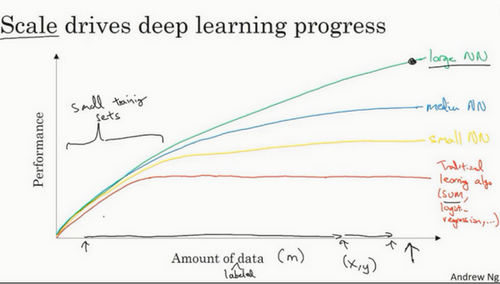
在这个小的训练集中，各种算法的优先级事实上定义的也不是很明确，所以如果你没有大规模的训练集，那效果会更多的取决于你的特征工程能力以及算法上的一些细节。比如在小规模数据集下，有些人使用训练出的一个SVM（支持向量机）可能会表现的更接近正确特征，因此你知道在这个图形区域的左边，各种算法之间的优先级并不是定义的很明确，只有在数据集规模很大，也即 会非常的大时，我们才能看到神经网络要稳定的优于其他算法，因此如果你的某个朋友问你为什么神经网络这么流行，我会鼓励你也画这样一个图形来解释。
所以可以这么说，在深度学习萌芽的初期，数据的规模以及算力，也就是我们训练一个特别大的神经网络的能力，无论是在CPU还是GPU上面，使得我们取得了巨大的进步。但是渐渐地，尤其是在最近这几年，我们也见证了算法方面的极大创新。许多算法方面的创新，都在尝试着使得神经网络运行的更快。
作为一个具体的例子，神经网络方面的一个巨大突破是从sigmoid函数转换到一个ReLU函数，这个函数我们在之前的课程里提到过。
sigmoid函数如果学过机器学习，应该会有一些印象

如果你无法理解刚才我说的某个细节，也不需要担心，可以知道的一个使用sigmoid函数和机器学习的问题是，在最左侧的区域，sigmoid函数的梯度会接近零，所以学习的速度会变得非常缓慢，因为当你使用梯度下降法且梯度接近零的时候，参数会更新的很慢，所以学习的速率也会变的很慢。
神经网络通过改变激活函数来优化这一点，我们可以换用ReLU的函数（修正线性单元），ReLU的梯度对于所有输入的负值都是零，对所有正值都是1，因此梯度更加不会趋向逐渐减少到零。仅仅通过将Sigmod函数转换成ReLU函数，便能够使得梯度下降法（gradient descent）运行的更快，这就是一个或许相对比较简单的算法创新的例子。
梯度下降法，机器学习内容。一个一阶优化算法。使用梯度下降法找到一个函数的局部极小值，必须向函数上当前点对应梯度（或者是近似梯度）的反方向的规定步长距离点进行迭代搜索。转自维基。
后面也会讲。
但是根本上算法创新所带来的是对计算速度的加速，也就是说更快的使模型达到收敛，所以有很多像这样的例子，我们通过改变算法，使得代码运行的更快，这也使得我们能够训练规模更大的神经网络，或者在合理的时间内完成训练，即使是在大数据量的复杂网络的情况下。
快速计算显得更加重要的另一个原因是，训练神经网络的过程，很多时候是凭借直觉的，往往你对神经网络架构有了一个想法，于是你尝试写代码实现你的想法，然后让你运行一个实验来验证你的神经网络效果有多好，通过参考这个结果再返回去修改你的神经网络里面的一些细节，然后你不断的重复上面的操作（相当于迭代）。如果你的神经网络需要很长时间去训练，需要很长时间重复这一循环，那么你的效率可能就不会很高。当你能够有一个想法，如果你能很高效快速的进行对于神经网络的训练、实验、优化，那么你往往就能更快地找到更适合你的神经网络。（无论是使用算力更强的平台还是更优的训练算法）
神经网络的编程基础(Basics of Neural Network programming)
二分类(Binary Classification)
这周我们将学习神经网络的基础知识，其中需要注意的是，当实现一个神经网络的时候，我们需要知道一些非常重要的技术和技巧。例如有一个包含 个样本的训练集，你很可能习惯于用一个for循环来遍历训练集中的每个样本，但是当实现一个神经网络的时候，我们通常不直接使用for循环来遍历整个训练集，所以在这周的课程中你将学会如何处理训练集。
另外在神经网络的计算中，通常先有一个叫做前向暂停(forward pause)或叫做前向传播(foward propagation)的步骤，接着有一个叫做反向暂停(backward pause) 或叫做反向传播(backward propagation)的步骤。所以这周我也会向你介绍为什么神经网络的训练过程可以分为前向传播和反向传播两个独立的部分。
在课程中我将使用逻辑回归(logistic regression)来传达这些想法，以使大家能够更加容易地理解这些概念。即使你之前了解过逻辑回归，我认为这里还是有些新的、有趣的东西等着你去发现和了解，所以现在开始进入正题。
逻辑回归是一个用于二分类(binary classification)的算法。首先我们从一个问题开始说起，这里有一个二分类问题的例子，假如你有一张图片作为输入，比如这张猫的图片，如果识别这张图片为猫，则输出标签1作为结果；如果识别出不是猫，那么输出标签0作为结果。现在我们可以用字母 来 表示输出的结果标签，如下图所示：

我们来看看一张图片在计算机中是如何表示的，为了保存一张图片，需要保存三个矩阵，它们分别对应图片中的红、绿、蓝三种颜色通道，如果你的图片大小为64x64像素，那么你就有三个规模为64x64的矩阵，分别对应图片中红、绿、蓝三种像素的强度值。为了便于表示，这里我画了三个很小的矩阵，注意它们的规模为 5x4 而不是64x64，如下图所示：

为了把这些像素值放到一个特征向量中，我们需要把这些像素值提取出来，然后放入一个特征向量 。为了把这些像素值转换为特征向量 ，我们需要像下面这样定义一个特征向量 来表示这张图片，我们把所有的像素都取出来，例如255、231等等，直到取完所有的红色像素，接着最后是255、134、…、255、134等等，直到得到一个特征向量，把图片中所有的红、绿、蓝像素值都列出来。如果图片的大小为64x64像素，那么向量 的总维度，将是64乘以64乘以3，这是三个像素矩阵中像素的总量，在这个例子中结果为12,288。现在我们用，来表示输入特征向量的维度，有时候为了简洁，我会直接用小写的 来表示输入特征向量 的维度。所以在二分类问题中，我们的目标就是习得一个分类器，它以图片的特征向量作为输入，然后预测输出结果 为1还是0，也就是预测图片中是否有猫：

接下来我们说明一些在余下课程中，需要用到的一些符号。
符号定义 ：
：表示一个 维数据，为输入数据，维度为 ；
：表示输出结果，取值为；
：表示第 组数据，可能是训练数据，也可能是测试数据，此处默认为训练数据；
数据集大小为 ，训练数据大小为 ，测试数据大小为
：表示所有的训练数据集的输入值，放在一个 的矩阵中，其中 表示训练集样本数目;
：对应表示所有训练数据集的输出值，维度为 。
注意有时候可能因为其他某些原因，矩阵 会由训练样本按照 行堆叠起来而不是列，如下图所示：的转置直到 的转置（即 的转置），但是在实现神经网络的时候，使用左边的这种形式，会让整个实现的过程变得更加简单：

现在来简单温习一下: 是一个规模为 乘以 的矩阵，当你用Python实现的时候，你会看到X.shape，这是一条Python命令，用于显示矩阵的规模，即X.shape等于 ， 是一个规模为 乘以 的矩阵。所以综上所述，这就是如何将训练样本（输入向量 的集合）表示为一个矩阵。
那么输出标签 呢? 同样的道理，为了能更加容易地实现一个神经网络，将标签 放在列中将会使得后续计算非常方便，所以我们定义大写的 等于 ，所以在这里是一个规模为1乘以 的矩阵，同样地使用Python将表示为 Y.shape 等于，表示这是一个规模为1乘以 的矩阵。

当你在后面的课程中实现神经网络的时候，你会发现，一个好的符号约定能够将不同训练样本的数据很好地组织起来。而我所说的数据不仅包括 或者 还包括之后你会看到的其他的量。将不同的训练样本的数据提取出来，然后就像刚刚我们对 或者 所做的那样，将他们堆叠在矩阵的列中，形成我们之后会在逻辑回归和神经网络上要用到的符号表示。
逻辑回归(Logistic Regression)
本节将主要介绍逻辑回归的Hypothesis Function（假设函数）。
对于二元分类问题来讲，给定一个输入特征向量 ，它可能对应一张图片，你想识别这张图片识别看它是否是一只猫或者不是一只猫的图片，你想要一个算法能够输出预测，你称该预测结果为 ，也就是你对实际值 的估计。更正式地来说，你想让 表示 等于1（以这个例子来说，图片里有猫）的概率。
在之前的视频中所说的， 是一个 维的向量（相当于有 个特征的特征向量）。我们用 来表示逻辑回归的参数，这也是一个 维向量（因为 实际上是特征权重，维度与特征向量相同），参数里面还有 ，这是一个实数（表示偏差）。所以问题就转化为了给出输入 以及参数 和 之后，我们怎样产生输出预测值 ，一件你可以尝试却不可行的事是让 。（就是线性回归）

这时候我们得到的是一个关于输入 的线性函数，实际上这是你在做线性回归时所用到的，但是这对于二元分类问题来讲不是一个非常好的算法，因为你想让 表示实际值 等于1的概率的话， 应该在0到1之间。这是一个需要解决的问题，因为 可能比1要大得多，或者甚至为一个负值。对于你想要的在0和1之间的概率来说它是没有意义的，因此在逻辑回归中，我们的输出应该是 等于由上面得到的线性函数式子作为自变量的sigmoid函数中（ ，也就是上面的 ），公式如上图最下面所示，将线性函数转换为非线性函数。
下图是sigmoid函数的图像，如果我把水平轴作为 轴，那么关于 的sigmoid函数是这样的，它是平滑地从0走向1，曲线与纵轴相交的截距是0.5，这就是关于 的sigmoid函数的图像。我们通常都使用 来表示 的值。

关于sigmoid函数的公式是这样的，
在这里 是一个实数，这里要说明一些要注意的事情，如果 非常大那么 将会接近于0，所以如果 很大的话那么关于 的sigmoid函数会非常接近1。相反地，如果 非常小或者说是一个绝对值很大的负数，那么关于 这项会变成一个很大的数，所以结果就接近于0。实际上你看到当 变成一个绝对值很大的负数，关于 的sigmoid函数就会非常接近于0，因此当你实现逻辑回归时，你的工作就是让机器去学习参数 以及 ，这样才使得 成为对 这一情况的概率的一个很好的估计。
在继续进行下一步之前，介绍一种符号惯例，可以让参数 和参数 分开。当我们对神经网络进行编程时，经常会让参数 和参数 分开，在这里参数 对应的是一种偏置（视频中讲 对应一个拦截器，感觉也没什么问题）。
在之前的机器学习课程里，你可能已经见过处理这个问题时的其他符号表示。比如在某些例子里，你定义一个额外的特征称之为 ，并且使它等于1，那么现在 就是一个 维的变量，然后你定义 的sigmoid函数。在这个备选的符号惯例里，你有一个参数向量 ，这样 就充当了 ，这是一个实数，而剩下的 直到 充当了 。但当你实现你的神经网络时，将 和 看做独立的参数会更好。但是在这节课里我们不会使用任何这类符号惯例，所以不用去担心。
这类符号表示相当于对 和 进行了整合
现在你已经知道逻辑回归模型是什么样子了，下一步要做的是训练参数 和参数 ，你需要定义一个代价函数，让我们在下节课里对其进行解释。
逻辑回归的代价函数（Logistic Regression Cost Function）
在上个视频中，我们讲了逻辑回归模型，这个视频里，我们讲逻辑回归的代价函数（也翻译作成本函数）。
为什么需要代价函数：
为了训练逻辑回归模型的参数参数 和参数 。我们需要一个代价函数，通过训练代价函数来得到参数 和参数 。先看一下逻辑回归的输出函数：

为了让模型通过学习来调整参数，你需要给予一个 样本的训练集，然后在训练集上训练得到参数 和参数 ，最终得到你的输出 。
对训练集的预测值，我们将它写成 ，我们更希望它会接近于训练集中的 值，我们需要说明的是，上面的定义是对一个训练样本来说的，这种形式也使用于每个训练样本，我们使用这些带有圆括号的上标来区分索引和样本，训练样本 所对应的预测值是 ，是用训练样本的 然后通过sigmoid函数来得到，也可以把 定义为 ，我们将使用这个符号注解，上标来指明数据表示 或者 或者 或者其他数据的第 个训练样本，这就是上标的含义。
损失函数：
损失函数又叫做误差函数，用来衡量算法的运行情况，Loss function: .
我们通过这个用 表示的损失函数，来衡量预测输出值和实际值有多接近。一般我们用预测值和实际值差的平方或该平方值的一半，但是通常在逻辑回归中我们不这么做，因为当我们在学习逻辑回归参数的时候，会发现我们的优化目标不是凸优化，梯度下降法只能找到多个局部最优值，很可能找不到全局最优值。
我们在逻辑回归中用到的损失函数是：
为什么要用这个函数作为逻辑损失函数？当我们使用误差平方作为损失函数的时候，你会想要让这个误差尽可能地小，对于这个逻辑回归损失函数，我们也想让它尽可能地小，为了更好地理解这个损失函数怎么起作用，我们举两个例子：（后面会有课程来解释为什么使用这一函数）
当 时损失函数 ，如果想要损失函数 尽可能得小，那么 就要尽可能大，因为sigmoid函数取值 ，所以 会无限接近于1。
当 时损失函数 ，如果想要损失函数 尽可能得小，那么 就要尽可能小，因为sigmoid函数取值，所以 会无限接近于0。
在这门课中有很多的函数效果和现在这个类似，就是如果 等于1，我们就尽可能让 变大，如果 等于0，我们就尽可能让 变小。
损失函数是在单个训练样本中定义的，它衡量的是算法在单个训练样本中表现如何，为了衡量算法在全部训练样本上的表现如何，我们需要定义一个算法的代价函数，算法的代价函数是对 个样本的损失函数求和然后除以 :
损失函数只适用于像这样的单个训练样本，而代价函数是参数的总代价，所以在训练逻辑回归模型时候，我们需要找到合适的 和 ，来让代价函数 的总代价降到最低。
根据我们对逻辑回归算法的推导及对单个样本的损失函数的推导和针对算法所选用参数的总代价函数的推导，结果表明逻辑回归可以看做是一个非常小的神经网络，在下一个视频中，我们会看到神经网络会做什么。
梯度下降法（Gradient Descent）
梯度下降法可以做什么？
在测试集上，通过最小化代价函数（成本函数） 来训练的参数 和 ，

如图，在第二行给出和之前一样的逻辑回归算法的代价函数（成本函数）
梯度下降法的形象化说明

在这个图中，横轴表示你的空间参数 和 ，在实践中， 可以是更高的维度，但是为了更好地绘图，我们定义 和 ，都是单一实数，代价函数（成本函数） 是在水平轴 和 上的曲面，因此曲面的高度就是在某一点的函数值。我们所做的就是找到使得代价函数（成本函数） 函数值是最小值，对应的参数 和 。

如图，代价函数（成本函数） 是一个凸函数(convex function)，像一个大碗一样。

如图，这就与刚才的图有些相反，因为它是非凸的并且有很多不同的局部最小值。由于逻辑回归的代价函数（成本函数） 特性，我们必须定义代价函数（成本函数） 为凸函数。（为了避免训练陷入局部最小值）
1.初始化 和

可以用如图那个小红点来初始化参数和，也可以采用随机初始化的方法，对于逻辑回归几乎所有的初始化方法都有效，因为函数是凸函数，无论在哪里初始化，应该达到同一点或大致相同的点。
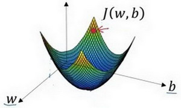
我们以如图的小红点的坐标来初始化参数和。
2. 朝最陡的下坡方向走一步，不断地迭代

我们朝最陡的下坡方向走一步，如图，走到了如图中第二个小红点处。

我们可能停在这里也有可能继续朝最陡的下坡方向再走一步，如图，经过两次迭代走到第三个小红点处。
3.直到走到全局最优解或者接近全局最优解的地方
通过以上的三个步骤我们可以找到全局最优解，也就是代价函数（成本函数） 这个凸函数的最小值点。
梯度下降法的细节化说明（为了简化，这里仅考虑一个参数的情况）

假定代价函数（成本函数） 只有一个参数 ，即用一维曲线代替多维曲线，这样可以更好画出图像。


迭代就是不断重复做如上图的公式。
符号表示更新参数,
表示学习率（learning rate），用来控制步长（step），即向下走一步的长度 就是函数 对 求导（derivative），在代码中我们会使用 表示这个结果
对于导数更加形象化的理解就是斜率（slope），如图该点的导数就是这个点相切于 的小三角形的高除宽。假设我们以如图点为初始化点，该点处的斜率的符号是正的，即，所以接下来会向左走一步。
整个梯度下降法的迭代过程就是不断地向左走，直至逼近最小值点。
假设我们以如图点为初始化点，该点处的斜率的符号是负的，即，所以接下来会向右走一步。
整个梯度下降法的迭代过程就是不断地向右走，即朝着最小值点方向走。


梯度下降法的细节化说明（两个参数）
逻辑回归的代价函数（成本函数） 是含有两个参数的。

表示求偏导符号，可以读作round，
就是函数 对 求偏导，在代码中我们会使用 表示这个结果，
就是函数 对 求偏导，在代码中我们会使用 表示这个结果，
小写字母 用在求导数（derivative），即函数只有一个参数，
偏导数符号 用在求偏导（partial derivative)，即函数含有两个以上的参数。
导数（Derivatives）
非常基础，略
更多的导数例子（More Derivative Examples）
非常基础，略
计算图（Computation Graph）
可以说，一个神经网络的计算，都是按照前向或反向传播过程组织的。首先我们计算出一个新的网络的输出（前向过程），紧接着进行一个反向传输操作。后者我们用来计算出对应的梯度或导数。计算图解释了为什么我们用这种方式组织这些计算过程。在这个视频中，我们将举一个例子说明计算图是什么。
让我们举一个比逻辑回归更加简单的，或者说不那么正式的神经网络的例子。

我们尝试计算函数 ， 是由三个变量 组成的函数，这个函数是 。计算这个函数实际上有三个不同的步骤，首先是计算 乘以 ，我们把它储存在变量 中，因此 ；
然后计算 ；最后输出 ，这就是要计算的函数 。我们可以把这三步画成如下的计算图，我先在这画三个变量 ，第一步就是计算 ，我在这周围放个矩形框，它的输入是 ，接着第二步 ，最后一步 。
当有不同的或者一些特殊的输出变量时，例如本例中的 和逻辑回归中你想优化的代价函数 ，计算图用来处理这些计算会很方便。从这个小例子中我们可以看出，通过一个从左向右的过程，你可以计算出 的值。为了计算导数，从右到左（红色箭头，和蓝色箭头的过程相反）的过程是用于计算导数最自然的方式。
概括一下：计算图组织计算的形式是用蓝色箭头从左到右的计算，让我们看看下一个视频中如何进行反向红色箭头(也就是从右到左)的导数计算，让我们继续下一个视频的学习。
使用计算图求导数（Derivatives with a Computation Graph）
微积分的链式法则，删减了一些重复性的例子
在上一个视频中，我们看了一个例子使用流程计算图来计算函数 。现在我们清理一下流程图的描述，看看你如何利用它计算出函数 的导数。
下面用到的公式：
这是一个流程图：

假设你要计算 ，那要怎么算呢？好，比如说，我们要把这个 值拿过来，改变一下，那么 的值会怎么变呢？
所以定义上 ，现在 ，所以如果你让 增加一点点，比如到11.001，那么 ，所以我这里 增加了0.001，然后最终结果是 上升到原来的3倍，所以 ，因为对于任何 的增量都会有3倍增量，而且这类似于我们在上一个视频中的例子，我们有 ，然后我们推导出 ，所以这里我们有 ，所以 ，这里 扮演了 的角色，在之前的视频里的例子。
在反向传播算法中的术语，我们看到，如果你想计算最后输出变量的导数，使用你最关心的变量对 的导数，那么我们就做完了一步反向传播，在这个流程图中是一个反向步骤。

我们来看另一个例子， 是多少呢？换句话说，如果我们提高 的数值，对 的数值有什么影响？
变量 ，我们让它增加到5.001，那么对 的影响就是 ，之前 ，现在变成11.001，我们从上面看到现在 就变成33.003了，所以我们看到的是，如果你让 增加0.001， 增加0.003。那么增加 ，我是说如果你把这个5换成某个新值，那么 的改变量就会传播到流程图的最右，所以 最后是33.003。所以J的增量是3乘以 的增量，意味着这个导数是3。

要解释这个计算过程，其中一种方式是：如果你改变了，那么也会改变，通过改变，也会改变 ，所以 值的净变化量，当你提升这个值（0.001），当你把 值提高一点点，这就是 的变化量（0.003）。
首先 增加了， 也会增加， 增加多少呢？这取决于 ，然后 的变化导致 也在增加，所以这在微积分里实际上叫链式法则，如果 影响到 ， 影响到 ，那么当你让 变大时， 的变化量就是当你改变 时， 的变化量乘以改变 时 的变化量，在微积分里这叫链式法则。
我们从这个计算中看到，如果你让 增加0.001， 也会变化相同的大小，所以 。事实上，如果你代入进去，我们之前算过 ，，所以这个乘积3×1，实际上就给出了正确答案， 。
现在我想介绍一个新的符号约定，当你编程实现反向传播时，通常会有一个最终输出值是你要关心的，最终的输出变量，你真正想要关心或者说优化的。在这种情况下最终的输出变量是 ，就是流程图里最后一个符号，所以有很多计算尝试计算输出变量的导数，所以输出变量对某个变量的导数，我们就用 命名，所以在很多计算中你需要计算最终输出结果的导数，在这个例子里是 ，还有各种中间变量，比如 ，当你在软件里实现的时候，变量名叫什么？你可以做的一件事是，在python中，你可以写一个很长的变量名，比如，但这个变量名有点长，我们就用 ，但因为你一直对 求导，对这个最终输出变量求导。我这里要介绍一个新符号，在程序里，当你编程的时候，在代码里，我们就使用变量名 ，来表示那个量。
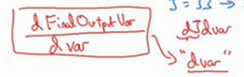
所以在程序里是 表示导数，你关心的最终变量 的导数，有时最后是 ，对代码中各种中间量的导数，所以代码里这个东西，你用 表示这个值，所以 ，你的代码表示就是 。
所以我们通过这个流程图完成部分的后向传播算法。我们在下一张幻灯片看看这个例子剩下的部分。
我们清理出一张新的流程图，我们回顾一下，到目前为止，我们一直在往回传播，并计算 ，再次，是代码里的变量名，其真正的定义是 。我发现 ，再次， 是代码里的变量名，其实代表 的值。

所以这个视频的要点是，对于那个例子，当计算所有这些导数时，最有效率的办法是从右到左计算，跟着这个红色箭头走。特别是当我们第一次计算对 的导数时，之后在计算对 导数就可以用到。然后对 的导数，比如说这个项和这里这个项：

可以帮助计算对 的导数，然后对 的导数。
所以这是一个计算流程图，就是正向或者说从左到右的计算来计算成本函数 ，你可能需要优化的函数，然后反向从右到左计算导数。如果你不熟悉微积分或链式法则，我知道这里有些细节讲的很快，但如果你没有跟上所有细节，也不用怕。在下一个视频中，我会再过一遍。在逻辑回归的背景下过一遍，并给你介绍需要做什么才能编写代码，实现逻辑回归模型中的导数计算。
逻辑回归中的梯度下降（Logistic Regression Gradient Descent）
本节我们讨论怎样通过计算偏导数来实现逻辑回归的梯度下降算法。它的关键点是几个重要公式，其作用是用来实现逻辑回归中梯度下降算法。但是在本节视频中，我将使用计算图对梯度下降算法进行计算。我必须要承认的是，使用计算图来计算逻辑回归的梯度下降算法有点大材小用了。但是，我认为以这个例子作为开始来讲解，可以使你更好的理解背后的思想。从而在讨论神经网络时，你可以更深刻而全面地理解神经网络。
假设样本只有两个特征 和 ，为了计算 ，我们需要输入参数 、 和 ，除此之外还有特征值 和 。因此 的计算公式为：
或者说，
回想一下逻辑回归的公式定义： 。
损失函数：
代价函数：
假设现在只考虑单个样本的情况，单个样本的代价函数定义如下：
其中 是逻辑回归的输出， 是样本的标签值。现在让我们画出表示这个计算的计算图。
这里先复习下梯度下降法， 和 的修正量可以表达如下：
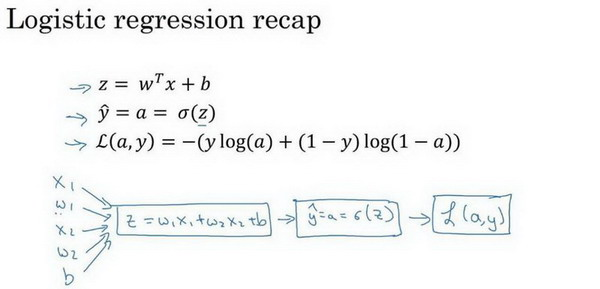
如图，我们可以通过前向计算损失函数。为了使得逻辑回归中最小化代价函数，我们需要做的仅仅是修改参数 和 的值。前面我们已经讲解了如何在单个训练样本上计算代价函数的前向步骤。现在让我们来讨论通过反向计算导数。
因为我们想要计算出的代价函数 的导数，首先我们需要反向计算出代价函数 关于 的导数，在编写代码时，你只需要用 来表示 。
通过微积分得到：
现在可以再反向一步，在编写Python代码时，你只需要用 来表示代价函数 关于 的导数 ，也可以写成 ，这两种写法都是正确的。
。因为 ，并且 ，而 ，因此将这两项相乘，得到：
现在进行最后一步反向推导，也就是计算 和 变化对代价函数 的影响，特别地，可以用:
视频中， 表示 ， 表示 ，。
因此，关于单个样本的梯度下降算法，你所需要做的就是如下的事情：
使用公式 计算 ，使用 计算 ， 计算 ， 来计算 ，
然后:
- 更新 ，
- 更新 ，
- 更新 。
这就是关于单个样本实例的梯度下降算法中参数更新一次的步骤。
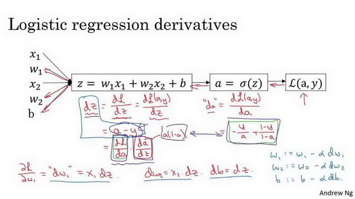
现在你已经知道了怎样计算导数，并且实现针对单个训练样本的逻辑回归的梯度下降算法。但是，训练逻辑回归模型不仅仅只有一个训练样本，而是有 个训练样本的整个训练集。因此在下一节视频中，我们将这些思想应用到整个训练样本集中，而不仅仅只是单个样本上。
个样本的梯度下降(Gradient Descent on m Examples)
个样本的梯度下降概述
在之前的视频中,你已经看到如何计算导数，以及应用梯度下降在逻辑回归的一个训练样本上。现在我们想要把它应用在 个训练样本上。
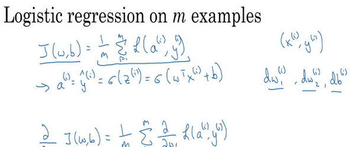
首先，让我们时刻记住有关于损失函数的定义。
当你的算法输出关于样本 的 ， 是训练样本的预测值，即：。
所以我们在前面的幻灯中展示的是对于任意单个训练样本，当你只有一个训练样本时如何计算微分。因此 ， 和 添上上标 表示你求得的相应的值。如果你面对的是我们在之前的幻灯中演示的那种情况，但只使用了一个训练样本 。
这里看起来可能有点乱，但意思就是我们把 个训练样本中的任意一个 应用到前面我们讲过的单个样本的训练中，所以要加上标，且
现在你知道带有求和的全局代价函数，实际上是1到 项各个损失的平均。 所以它表明全局代价函数对 的微分，对 的微分也同样是各项损失对 微分的平均。即：
类似的，不再赘述。
算法思想与伪代码
之前幻灯中演示的如何对单个训练样本进行计算。所以你真正需要做的是计算这些微分，如我们在之前的训练样本上做的。并且求平均，这会给你全局梯度值，你能够把它直接应用到梯度下降算法中。
我们初始化
代码流程：
1 | J=0;dw1=0;dw2=0;db=0; |
幻灯片上只应用了一步梯度下降。因此你需要重复以上内容很多次，以应用多次梯度下降。
在算法中，我们使用 作为累加器，所以在计算后， ，另外两个同理，所以这也是他们三个在代码中没有用上标标识的原因，但 是对应于单个样本训练的 ，所以会有上标标识。
上图右上角的 并不属于算法流程，只是在解释上面说的这一点，解释一下以避免误导
但这种计算中有两个缺点，也就是说应用此方法在逻辑回归上你需要编写两个for循环。第一个for循环是一个小循环遍历 个训练样本，第二个for循环是一个遍历所有特征的for循环。这个例子中我们只有2个特征，所以 并且 。 但如果你有更多特征，你开始编写你的因此 ， ，你有相似的计算从一直下去到 。所以你需要一个for循环遍历所有 个特征。
当你应用深度学习算法，你会发现在代码中显式地使用for循环使你的算法很低效，同时在深度学习领域会有越来越大的数据集。所以能够应用你的算法且没有显式的for循环会是重要的，并且会帮助你适用于更大的数据集。所以这里有一些叫做向量化技术，它可以允许你的代码摆脱这些显式的for循环。
我想在先于深度学习的时代，也就是深度学习兴起之前，向量化是很棒的。可以使你有时候加速你的运算，但有时候也未必能够。但是在深度学习时代向量化，摆脱for循环已经变得相当重要。因为我们越来越多地训练非常大的数据集，因此你真的需要你的代码变得非常高效。所以在接下来的几个视频中，我们会谈到向量化，以及如何应用向量化而连一个for循环都不使用。所以学习了这些，我希望你有关于如何应用逻辑回归，或是用于逻辑回归的梯度下降，事情会变得更加清晰。当你进行编程练习，但在真正做编程练习之前让我们先谈谈向量化。然后你可以应用全部这些东西，应用一个梯度下降的迭代而不使用任何for循环。
向量化之本科死去的并行计算课程内容突然开始攻击我
向量化(Vectorization)
向量化是非常基础的去除代码中for循环的艺术，在深度学习安全领域、深度学习实践中，你会经常发现自己要在大数据集上进行训练，因为深度学习算法处理大数据集效果很棒，所以你的代码运行速度非常重要，否则如果在大数据集上，你的代码可能花费很长时间去运行，你将要等待非常长的时间去得到结果。所以在深度学习领域，运行向量化是一个关键的技巧，让我们举个栗子说明什么是向量化。
在逻辑回归中你需要去计算 ，、 都是列向量。如果你有很多的特征那么就会有一个非常大的向量，所以 , ，所以如果你想使用非向量化方法去计算 ，你需要用如下方式（python）
1 | z=0 |
这是一个非向量化的实现，你会发现这真的很慢，作为一个对比，向量化实现将会非常直接计算 ，代码如：z=np.dot(w,x)+b 。这是向量化计算的方法，你将会发现这个非常快
dot函数为numpy库下的一个函数，主要用于矩阵的乘法运算，其中包括：向量内积、多维矩阵乘法和矩阵与向量的乘法。
让我们用一个小例子说明一下，在我的我将会写一些代码（以下为教授在他的Jupyter notebook上写的Python代码，）
1 | import numpy as np #导入numpy库 |
返回值见图。
在两个方法中，向量化和非向量化计算了相同的值，如你所见，向量化版本花费了1.5毫秒，非向量化版本的for循环花费了大约几乎500毫秒，非向量化版本多花费了300倍时间。所以在这个例子中，仅仅是向量化你的代码，就会运行300倍快。这意味着如果向量化方法需要花费一分钟去运行的数据，for循环将会花费5个小时去运行。
一句话总结，以上都是再说和for循环相比，向量化可以快速得到结果。
你可能听过很多类似如下的话，“大规模的深度学习使用了GPU或者图像处理单元实现”，但是我做的所有的案例都是在jupyter notebook上面实现，这里只有CPU，CPU和GPU都有并行化的指令，他们有时候会叫做SIMD指令，这个代表了一个单独指令多维数据，这个的基础意义是，如果你使用了built-in函数，像np.function或者并不要求你实现循环的函数，它可以让python的充分利用并行化计算，这是事实在GPU和CPU上面计算，GPU更加擅长SIMD计算，但是CPU事实上也不是太差，可能没有GPU那么擅长吧。接下来的视频中，你将看到向量化怎么能够加速你的代码，经验法则是，无论什么时候，避免使用明确的for循环。
以下代码及运行结果截图：


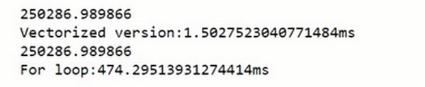
向量化的更多例子（More Examples of Vectorization）
从上节视频中，你知道了怎样通过numpy内置函数和避开显式的循环(loop)的方式进行向量化，从而有效提高代码速度。
经验提醒我，当我们在写神经网络程序时，或者在写逻辑(logistic)回归，或者其他神经网络模型时，应该避免写循环(loop)语句。虽然有时写循环(loop)是不可避免的，但是我们可以使用比如numpy的内置函数或者其他办法去计算。当你这样使用后，程序效率总是快于循环(loop)。
让我们看另外一个例子。如果你想计算向量 ，这时矩阵乘法定义为，矩阵乘法的定义就是： ，这取决于你怎么定义 值。同样使用非向量化实现， ， 并且通过两层循环 ，得到 。现在就有了 和 的两层循环，这就是非向量化。向量化方式就可以用 ，下图右边这种向量化实现方式，消除了两层循环使得代码运行速度更快。

下面通过另一个例子继续了解向量化。如果你已经有一个向量 ，并且想要对向量 的每个元素做指数操作，得到向量 等于 的 ， 的 ，一直到 的 次方。这里是非向量化的实现方式，首先你初始化了向量，并且通过循环依次计算每个元素。但事实证明可以通过python的numpy内置函数，帮助你计算这样的单个函数。所以我会引入import numpy as np，执行 命令。注意到，在之前有循环的代码中，这里仅用了一行代码，向量 作为输入， 作为输出。你已经知道为什么需要循环，并且通过右边代码实现，效率会明显的快于循环方式。
事实上，numpy库有很多向量函数。比如 u=np.log是计算对数函数()、 np.abs() 计算数据的绝对值、np.maximum(v, 0) 按元素计算中每个元素和和0相比的最大值，v**2 代表获得元素 每个值的平方、 1/v 获取 中每个元素的倒数等等。所以当你想写循环时候，检查numpy是否存在类似的内置函数，从而避免使用循环(loop)方式。
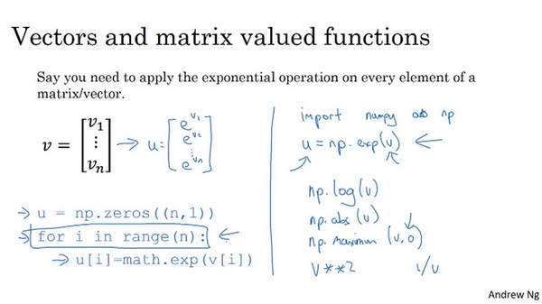
那么，将刚才所学到的内容，运用在逻辑回归的梯度下降上，看看我们是否能简化两个计算过程中的某一步。这是我们逻辑回归的求导代码，有两层循环。在这例子我们有个特征值。如果你有超过两个特征时，需要循环 、 、 等等。所以 的实际值是1、2 和 ，就是你想要更新的值。所以我们想要消除第二循环，在这一行，这样我们就不用初始化 ， 都等于0。去掉这些，而是定义 为一个向量，设置 。定义了一个 行的一维向量，从而替代循环。我们仅仅使用了一个向量操作 。最后，我们得到 。现在我们通过将两层循环转成一层循环，我们仍然还有这个循环训练样本。
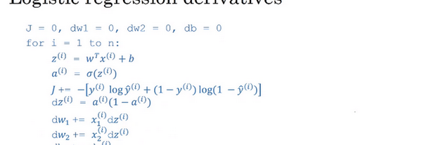

这里图中公式有误，应为
希望这个视频给了你一点向量化感觉，减少一层循环使你代码更快，但事实证明我们能做得更好。所以在下个视频，我们将进一步的讲解逻辑回归，你将会看到更好的监督学习结果。在训练中不需要使用任何 for 循环，你也可以写出代码去运行整个训练集。
向量化逻辑回归(Vectorizing Logistic Regression)
我们已经讨论过向量化是如何显著加速你的代码，在本次视频中我们将讨论如何实现逻辑回归的向量化计算。这样就能处理整个数据集，甚至不会用一个明确的for循环就能实现对于整个数据集梯度下降算法的优化。我对这项技术感到非常激动，并且当我们后面谈到神经网络时同样也不会用到一个明确的 for 循环。
让我们开始吧，首先我们回顾一下逻辑回归的前向传播步骤。所以，如果你有 个训练样本，然后对第一个样本进行预测，你需要这样计算。计算 ，我正在使用这个熟悉的公式 。然后计算激活函数 ，计算第一个样本的预测值 。
然后对第二个样本进行预测，你需要计算 ， 。然后对第三个样本进行预测，你需要计算 ， ，依次类推。如果你有 个训练样本，你可能需要这样做 次，可以看出，为了完成前向传播步骤，即对我们的 个样本都计算出预测值。有一个办法可以并且不需要任何一个明确的for循环。让我们来看一下你该怎样做。
首先，回忆一下我们曾经定义了一个矩阵 作为你的训练输入，(如下图中蓝色 )像这样在不同的列中堆积在一起。这是一个 行 列的矩阵。我现在将它写为Python numpy的形式 ，这只是表示 是一个 乘以 的矩阵 。

现在我首先想做的是告诉你该如何在一个步骤中计算 、 、 等等。实际上，只用了一行代码。所以，我打算先构建一个 的矩阵，实际上它是一个行向量，同时我准备计算 ， ……一直到 ，所有值都是在同一时间内完成。结果发现它可以表达为 的转置乘以大写矩阵 然后加上向量 ， 。 是一个 的向量或者 的矩阵或者是一个 维的行向量。所以希望你熟悉矩阵乘法，你会发现的 转置乘以 ， 一直到 。所以 转置可以是一个行向量。所以第一项 将计算 的转置乘以 ， 转置乘以 等等。然后我们加上第二项 ，你最终将 加到了每个元素上。所以你最终得到了另一个 的向量，即：
这是第一个元素， 这是第二个元素， 这是第 个元素。
如果你参照上面的定义，第一个元素恰好是 的定义，第二个元素恰好是 的定义，等等。所以，因为是一次获得的，当你得到你的训练样本，一个一个横向堆积起来，这里我将 定义为大写的 ，你用小写 表示并将它们横向排在一起。所以当你将不同训练样本对应的小写 横向堆积在一起时得到大写变量 ，而对 也是同样的道理。结果发现，为了计算 ，numpy命令是。这里在Python中有一个巧妙的地方，这里 是一个实数，或者你可以说是一个 矩阵，只是一个普通的实数。但是当你将这个向量加上这个实数时，Python自动把这个实数 扩展成一个 的行向量。所以这种情况下的操作似乎有点不可思议，它在Python中被称作广播(brosdcasting)，目前你不用对此感到顾虑，我们将在下一个视频中进行进一步的讲解。话说回来它只用一行代码，用这一行代码，你可以计算大写的 ，而大写 是一个包含所有小写 到 的 的矩阵。这就是 的内容，关于变量 又是如何呢？
我们接下来要做的就是找到一个同时计算 的方法。就像把小写 堆积起来得到大写 和横向堆积小写 得到大写 一样，堆积小写变量 将形成一个新的变量，我们将它定义为大写 。在编程作业中，你将看到怎样用一个向量在sigmoid函数中进行计算。所以sigmoid函数中输入大写 作为变量并且非常高效地输出大写 。你将在编程作业中看到它的细节。
总结一下，在这张幻灯片中我们已经看到，不需要for循环，利用 个训练样本一次性计算出小写 和小写 ，用一行代码即可完成。Z = np.dot(w.T,X) + b
这一行代码： ，通过恰当地运用 一次性计算所有 。这就是在同一时间内你如何完成一个所有 个训练样本的前向传播向量化计算。
概括一下，你刚刚看到如何利用向量化在同一时间内高效地计算所有的激活函数的所有 值。接下来，可以证明，你也可以利用向量化高效地计算反向传播并以此来计算梯度。让我们在下一个视频中看该如何实现。
向量化 logistic 回归的梯度输出（Vectorizing Logistic Regression’s Gradient）
注：本节中大写字母代表向量，小写字母代表元素
如何通过向量化对整个训练集预测结果 进行计算，这是我们之前已经讨论过的内容。在本次视频中我们将学习如何向量化地计算 个训练数据的梯度，本次视频的重点是如何同时计算 个数据的梯度，并且实现一个非常高效的逻辑回归算法(Logistic Regression)。
之前我们在讲梯度计算的时候，列举过几个例子， ， ……等等一系列类似公式。现在，对 个训练数据做同样的运算，我们可以定义一个新的变量
，所有的 变量横向排列，因此， 是一个 的矩阵，或者说，一个 维行向量。在之前的幻灯片中，我们已经知道如何计算，即 ，我们需要找到这样的一个行向量 ，由此，我们可以这样计算 ，不难发现第一个元素就是 ，第二个元素就是 ……所以我们现在仅需一行代码，就可以同时完成这所有的计算。
在之前的实现中，我们已经去掉了一个for循环，但我们仍有一个遍历训练集的循环，如下所示：
………….
………….
上述（伪）代码就是我们在之前实现中做的，我们已经去掉了一个for循环，但用上述方法计算 仍然需要一个循环遍历训练集，我们现在要做的就是将其向量化！
首先我们来看 ，不难发现 ，之前的讲解中，我们知道所有的 已经组成一个行向量 了，所以在Python中，我们很容易地想到 ；接下来看 ，我们先写出它的公式 。其中， 是一个行向量。因此展开后 。因此我们可以仅用两行代码进行计算：， 。这样，我们就避免了在训练集上使用for循环。
现在，让我们回顾一下，看看我们之前怎么实现的逻辑回归，可以发现，没有向量化是非常低效的，如下图所示代码：
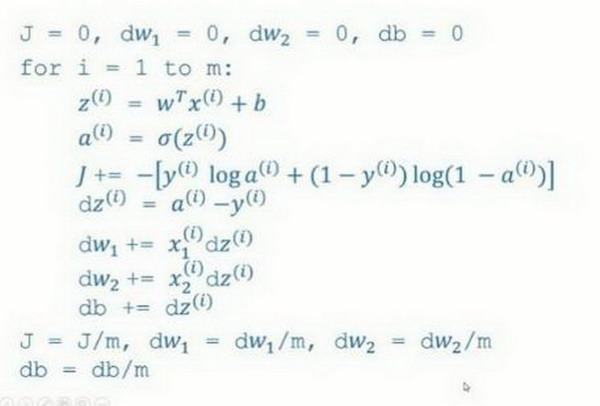
我们的目标是不使用for循环，而是向量，我们可以这么做：
现在我们利用前五个公式完成了前向和后向传播，也实现了对所有训练样本进行预测和求导，再利用后两个公式，梯度下降更新参数。我们的目的是不使用for循环，所以我们就通过一次迭代实现一次梯度下降，但如果你希望多次迭代进行梯度下降，那么仍然需要for循环，放在最外层。不过我们还是觉得一次迭代就进行一次梯度下降，避免使用任何循环比较舒服一些。
最后，我们得到了一个高度向量化的、非常高效的逻辑回归的梯度下降算法，我们将在下次视频中讨论Python中的Broadcasting技术。
Python 中的广播（Broadcasting in Python）
跟课程关系不大，选看
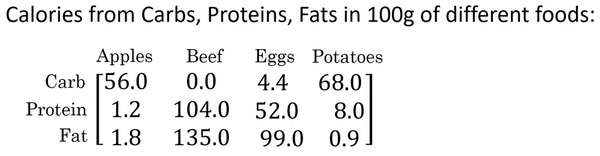
这是一个不同食物(每100g)中不同营养成分的卡路里含量表格，表格为3行4列，列表示不同的食物种类，从左至右依次为苹果，牛肉，鸡蛋，土豆。行表示不同的营养成分，从上到下依次为碳水化合物，蛋白质，脂肪。
那么，我们现在想要计算不同食物中不同营养成分中的卡路里百分比。
现在计算苹果中的碳水化合物卡路里百分比含量，首先计算苹果（100g）中三种营养成分卡路里总和56+1.2+1.8= 59，然后用56/59 = 94.9%算出结果。
可以看出苹果中的卡路里大部分来自于碳水化合物，而牛肉则不同。
对于其他食物，计算方法类似。首先，按列求和，计算每种食物中（100g）三种营养成分总和，然后分别用不用营养成分的卡路里数量除以总和，计算百分比。
那么，能否不使用for循环完成这样的一个计算过程呢？
假设上图的表格是一个4行3列的矩阵，记为 ，接下来我们要使用Python的numpy库完成这样的计算。我们打算使用两行代码完成，第一行代码对每一列进行求和，第二行代码分别计算每种食物每种营养成分的百分比。
在jupyter notebook中输入如下代码，按shift+Enter运行，输出如下。
下面使用如下代码计算每列的和，可以看到输出是每种食物(100g)的卡路里总和。
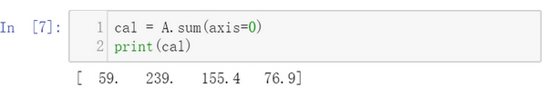
其中sum的参数axis=0表示求和运算按列执行，之后会详细解释。
接下来计算百分比，这条指令将 的矩阵除以一个 的矩阵，得到了一个 的结果矩阵，这个结果矩阵就是我们要求的百分比含量。

下面再来解释一下A.sum(axis = 0)中的参数axis。axis用来指明将要进行的运算是沿着哪个轴执行，在numpy中，0轴是垂直的，也就是列，而1轴是水平的，也就是行。
而第二个A/cal.reshape(1,4)指令则调用了numpy中的广播机制。这里使用 的矩阵 除以 的矩阵 。技术上来讲，其实并不需要再将矩阵 reshape(重塑)成 ，因为矩阵 本身已经是 了。但是当我们写代码时不确定矩阵维度的时候，通常会对矩阵进行重塑来确保得到我们想要的列向量或行向量。重塑操作reshape是一个常量时间的操作，时间复杂度是，它的调用代价极低。
那么一个 的矩阵是怎么和 的矩阵做除法的呢？让我们来看一些更多的广播的例子。

在numpy中，当一个 的列向量与一个常数做加法时，实际上会将常数扩展为一个 的列向量，然后两者做逐元素加法。结果就是右边的这个向量。这种广播机制对于行向量和列向量均可以使用。
再看下一个例子。

用一个 的矩阵和一个 的矩阵相加，其泛化形式是 的矩阵和 的矩阵相加。在执行加法操作时，其实是将 的矩阵复制成为 的矩阵，然后两者做逐元素加法得到结果。针对这个具体例子，相当于在矩阵的第一列加100，第二列加200，第三列加300。这就是在前一张幻灯片中计算卡路里百分比的广播机制，只不过这里是除法操作（广播机制与执行的运算种类无关）。
下面是最后一个例子

这里相当于是一个 的矩阵加上一个 的矩阵。在进行运算时，会先将 矩阵水平复制 次，变成一个 的矩阵，然后再执行逐元素加法。
广播机制的一般原则如下：
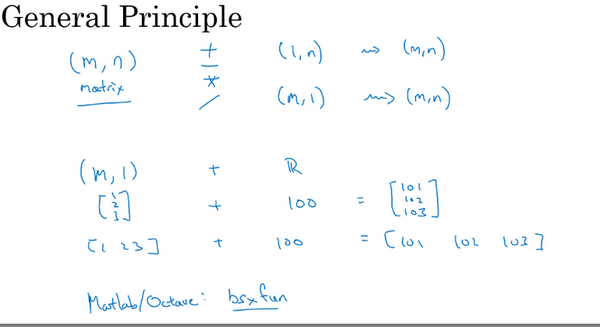
这里我先说一下我本人对numpy广播机制的理解，再解释上面这张PPT。
首先是numpy广播机制
如果两个数组的后缘维度的轴长度相符或其中一方的轴长度为1，则认为它们是广播兼容的。广播会在缺失维度和轴长度为1的维度上进行。
后缘维度的轴长度：A.shape[-1] 即矩阵维度元组中的最后一个位置的值
对于视频中卡路里计算的例子，矩阵 后缘维度的轴长度是4，而矩阵 的后缘维度也是4，则他们满足后缘维度轴长度相符，可以进行广播。广播会在轴长度为1的维度进行，轴长度为1的维度对应axis=0，即垂直方向，矩阵 沿axis=0(垂直方向)复制成为 ，之后两者进行逐元素除法运算。
现在解释上图中的例子
矩阵 和矩阵 进行四则运算，后缘维度轴长度相符，可以广播，广播沿着轴长度为1的轴进行，即 广播成为 ，之后做逐元素四则运算。
矩阵 和矩阵 进行四则运算，后缘维度轴长度不相符，但其中一方轴长度为1，可以广播，广播沿着轴长度为1的轴进行，即 广播成为 ，之后做逐元素四则运算。
矩阵 和常数 进行四则运算，后缘维度轴长度不相符，但其中一方轴长度为1，可以广播，广播沿着缺失维度和轴长度为1的轴进行，缺失维度就是axis=0,轴长度为1的轴是axis=1，即广播成为 ，之后做逐元素四则运算。
最后，对于Matlab/Octave 有类似功能的函数bsxfun。
总结一下broadcasting，可以看看下面的图：
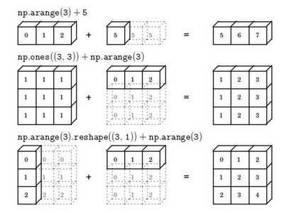
关于 python _ numpy 向量的说明（A note on python or numpy vectors）
本节主要讲Python中的numpy一维数组的特性，以及与行向量或列向量的区别。并介绍了老师在实际应用中的一些小技巧，去避免在coding中由于这些特性而导致的bug。
Python的特性允许你使用广播（broadcasting）功能，这是Python的numpy程序语言库中最灵活的地方。而我认为这是程序语言的优点，也是缺点。优点的原因在于它们创造出语言的表达性，Python语言巨大的灵活性使得你仅仅通过一行代码就能做很多事情。但是这也是缺点，由于广播巨大的灵活性，有时候你对于广播的特点以及广播的工作原理这些细节不熟悉的话，你可能会产生很细微或者看起来很奇怪的bug。例如，如果你将一个列向量添加到一个行向量中，你会以为它报出维度不匹配或类型错误之类的错误，但是实际上你会得到一个行向量和列向量的求和。
在Python的这些奇怪的影响之中，其实是有一个内在的逻辑关系的。但是如果对Python不熟悉的话，我就曾经见过的一些学生非常生硬、非常艰难地去寻找bug。所以我在这里想做的就是分享给你们一些技巧，这些技巧对我非常有用，它们能消除或者简化我的代码中所有看起来很奇怪的bug。同时我也希望通过这些技巧，你也能更容易地写没有bug的Python和numpy代码。
为了演示Python-numpy的一个容易被忽略的效果，特别是怎样在Python-numpy中构造向量，让我来做一个快速示范。首先设置 ，这样会生成存储在数组 中的5个高斯随机数变量。之后输出 ，从屏幕上可以得知，此时 的shape（形状）是一个的结构。这在Python中被称作一个一维数组。它既不是一个行向量也不是一个列向量，这也导致它有一些不是很直观的效果。举个例子，如果我输出一个转置阵，最终结果它会和 看起来一样，所以 和 的转置阵最终结果看起来一样。而如果我输出 和 的转置阵的内积，你可能会想： 乘以 的转置返回给你的可能会是一个矩阵。但是如果我这样做，你只会得到一个数。

所以建议你编写神经网络时，不要使用shape为 (5, )、(n, ) 或者其他一维数组的数据结构。相反，如果你设置 为，那么这就将置于5行1列向量中。在先前的操作里 和 的转置看起来一样，而现在这样的 变成一个新的 的转置，并且它是一个行向量。请注意一个细微的差别，在这种数据结构中，当我们输出 的转置时有两对方括号，而之前只有一对方括号，所以这就是1行5列的矩阵和一维数组的差别。

如果你输出 和 的转置的乘积，然后会返回给你一个向量的外积，是吧？所以这两个向量的外积返回给你的是一个矩阵。

就我们刚才看到的，再进一步说明。首先我们刚刚运行的命令是这个 ，它生成了一个数据结构 ，其中 是。这被称作 的一维数组，同时这也是一个非常有趣的数据结构。它不像行向量和列向量那样表现的很一致，这使得它带来一些不直观的影响。所以我建议，当你在编程练习或者在执行逻辑回归和神经网络时，你不需要使用这些一维数组。

相反，如果你每次创建一个数组，你都得让它成为一个列向量，产生一个向量或者你让它成为一个行向量，那么你的向量的行为可能会更容易被理解。所以在这种情况下， 等同于。这种表现很像 ，但是实际上却是一个列向量。同时这也是为什么当它是一个列向量的时候，你能认为这是矩阵；同时这里 将要变成，这就像行向量一样。所以当你需要一个向量时，我会说用这个或那个(column vector or row vector)，但绝不会是一维数组。

我写代码时还有一件经常做的事，那就是如果我不完全确定一个向量的维度(dimension)，我经常会扔进一个断言语句(assertion statement)。像这样，去确保在这种情况下是一个向量，或者说是一个列向量。这些断言语句实际上是要去执行的，并且它们也会有助于为你的代码提供信息。所以不论你要做什么，不要犹豫直接插入断言语句。如果你不小心以一维数组来执行，你也能够重新改变数组维数 ，表明一个 数组或者一个 数组，以致于它表现更像列向量或行向量。

我有时候看见学生因为一维数组不直观的影响，难以定位bug而告终。通过在原先的代码里清除一维数组，我的代码变得更加简洁。而且实际上就我在代码中表现的事情而言，我从来不使用一维数组。因此，要去简化你的代码，而且不要使用一维数组。总是使用 维矩阵（基本上是列向量），或者 维矩阵（基本上是行向量），这样你可以减少很多assert语句来节省核矩阵和数组的维数的时间。另外，为了确保你的矩阵或向量所需要的维数时，不要羞于 reshape 操作。
总之，我希望这些建议能帮助你解决一个Python中的bug，从而使你更容易地完成练习。
Jupyter/iPython Notebooks快速入门（Quick tour of Jupyter/iPython Notebooks）
略
安装：https://blog.csdn.net/weixin_43855159/article/details/137738714
使用：https://www.jiqizhixin.com/articles/2018-05-30-5
等等，随便搜，很多
（选修）logistic 损失函数的解释（Explanation of logistic regression cost function）
在前面的视频中，我们已经分析了逻辑回归的损失函数表达式，在这节选修视频中，我将给出一个简洁的证明来说明逻辑回归的损失函数为什么是这种形式。
回想一下，在逻辑回归中，需要预测的结果 ，可以表示为 ， 是我们熟悉的 型函数
我们约定 ，即算法的输出 是给定训练样本 条件下 等于1的概率。换句话说，如果 ，在给定训练样本 条件下 ；反过来说，如果 ，在给定训练样本 条件下 等于1减去 ，因此，如果 代表 的概率，那么 就是 的概率。接下来，我们就来分析这两个条件概率公式。
这两个条件概率公式定义形式为 并且代表了 或者 这两种情况（伯努利分布），我们可以将这两个公式合并成一个公式。需要指出的是我们讨论的是二分类问题的损失函数，因此， 的取值只能是0或者1。上述的两个条件概率公式可以合并成如下公式：
接下来我会解释为什么可以合并成这种形式的表达式：的次方这行表达式包含了上面的两个条件概率公式，我来解释一下为什么。
第一种情况，假设 ，由于，那么，因为 的1次方等于 ，的指数项 等于0，由于任何数的0次方都是1， 乘以1等于 。因此当 时 （图中绿色部分）。
第二种情况，当 时 等于多少呢？假设 ， 的 次方就是 的0次方，任何数的0次方都等于1，因此 ，前面假设 因此 就等于1，因此 。因此在这里当 时， 。这就是这个公式(第二个公式，图中紫色字体部分)的结果。
因此，刚才的推导表明 ，就是 的完整定义。由于 log 函数是严格单调递增的函数，最大化 等价于最大化 并且地计算 的 log对数，就是计算 (其实就是将 代入)，通过对数函数化简为：
而这就是我们前面提到的损失函数的负数 ，前面有一个负号的原因是当你训练学习算法时需要算法输出值的概率是最大的（以最大的概率预测这个值），然而在逻辑回归中我们需要最小化损失函数，因此最小化损失函数与最大化条件概率的对数 关联起来了，因此这就是单个训练样本的损失函数表达式。
在 个训练样本的整个训练集中又该如何表示呢，让我们一起来探讨一下，整个训练集中标签的概率，更正式地来写一下。假设所有的训练样本服从同一分布且相互独立，也即独立同分布的，所有这些样本的联合概率就是每个样本概率的乘积:
如果你想做最大似然估计，需要寻找一组参数，使得给定样本的观测值概率最大，但令这个概率最大化等价于令其对数最大化，在等式两边取对数：
在统计学里面，有一个方法叫做最大似然估计，即求出一组参数，使这个式子取最大值，也就是说，使得这个式子取最大值，，可以将负号移到求和符号的外面，，这样我们就推导出了前面给出的logistic回归的成本函数 。
由于训练模型时，目标是让成本函数最小化，所以我们不是直接用最大似然概率，要去掉这里的负号，最后为了方便，可以对成本函数进行适当的缩放，我们就在前面加一个额外的常数因子，即: 。
总结一下，通过最小化成本函数 ，我们使用logistic回归模型进行最大似然估计，假设训练集中的样本都是独立同分布的条件下。